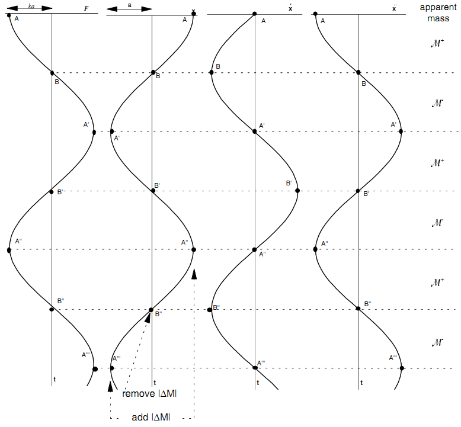

PFC 中的能量与耗散机制
能量跟踪
能量跟踪通过 设置能量跟踪命令（model energy） 命令启用。每个循环都会为 球颗粒（balls）、刚性簇（clumps）、墙（walls） 和 接触（contacts） 累积能量。机械能分为两类：体能量与接触能量。
这些能量可通过 球体能量（ball.energy）、刚性簇能量（clump.energy）、墙体总能量贡献（wall.energy） 和
contact.energy FISH 函数获取。每一类能量的总和可通过
mech.energy FISH 函数获取。
力学体能量是指与体的运动相关的能量。对于球颗粒和刚性簇，这些能量包括： 由体力产生的能量，其中体力定义为重力荷载以及施加的力和力矩（记为 energy-body）， 由局部阻尼耗散的能量（记为 energy-damp）以及动能（记为 energy-kinetic）。 对于墙，则累积边界功（记为 energy-boundary）。在每个时步，边界功等于作用在墙上的力与增量位移的点积， 以及作用在墙上的力矩与增量角位移的点积之和。
力学接触能量是指由接触模型定义的能量。力学接触模型的列表在“接触模型（Contact Models）”一节中给出。 在每种接触模型的文档中都存在一个 能量 表。这些表包括 线性（linear）、线性接触黏结（linear contact bond）、 线性平行黏结（linear parallel bond）、赫兹（hertz）、滞回（hysteretic）、光滑节理（smooth joint） 和 平节理（flat joint） 能量表。 对于所有内置接触模型，能量列表包括：energy-adhesive、energy-dashpot、energy-pbstrain、energy-rrstrain、energy-rrslip、energy-slip 和 energy-strain。
力学阻尼
供给颗粒系统的能量通过 接触模型（contact models） 以摩擦滑动或黏性阻尼的形式耗散。然而，这些耗散机制 可能不足以在合理的循环次数内达到稳态解。一种称为 局部阻尼 的基于体的阻尼方案 可用于移除额外的动能。局部阻尼作用于每个球颗粒或刚性簇， 施加大小与不平衡力成正比的阻尼力。
对于密实集合体，可以使用非零的局部阻尼来建立平衡并进行 准静态变形模拟。当需要对密实集合体进行动力模拟时， 宜采用基于接触模型的阻尼策略，并将局部阻尼系数设置为 0.0 或一个较小的值。对于涉及颗粒自由飞行和/或颗粒间 碰撞的问题，局部阻尼并不适用，应采用基于接触模型的阻尼策略。 如果模拟以快速碰撞为主，则应考虑使用 滞回（hysteretic） 接触模型，以获得符合实际的能量耗散。
局部阻尼
PFC 中使用的局部阻尼与 [Cundall1987] 中描述的阻尼类似。在运动方程（平动见 此处（here）， 转动见 此处（here））中加入一个阻尼力项，使阻尼后的运动方程可写为
式中，\({\cal F}_{(i)}\)、\({\cal M}_{(i)}\) 和 \({\cal A}_{(i)}\) 分别为广义力、质量和 加速度分量。\({\cal F}_{(i)}\) 包含重力所作的贡献， \(\mathbf{F^d}_{(i)}\) 为阻尼力：
用广义速度表示为：
阻尼力由阻尼常数 \(\alpha\) 控制，其默认值为 0.0；可分别使用 damp 关键字在
ball attribute 或 clump attribute 命令中为每个球颗粒或刚性簇单独指定该常数。
这种形式的阻尼具有以下优点：
- 只有加速运动才会受到阻尼；因此，稳态运动不会产生 错误的阻尼力。
- 阻尼常数 \(\alpha\) 是无量纲量。
- 由于阻尼与频率无关，集合体中具有不同自振周期的区域 会使用相同的阻尼常数而受到同等的阻尼。
与滞回阻尼的相似性
局部阻尼公式与滞回阻尼类似，在滞回阻尼中，每个循环的能量损失与该循环执行的速率无关。 以下分析将说明这种相似性。考察方程 (2) 可以看出，阻尼力总是阻碍运动， 但其大小按合成的广义力进行缩放，而不像黏性阻尼那样按速度大小进行缩放。 方程 (1) 可根据 \({\cal F}_{(i)}\) 与 \({\cal V}_{(i)}\) 的相对符号写成两种形式。 当二者符号相同时，运动方程为
而当二者符号相反时，运动方程为
这些方程可用表观质量表示为
式中，\({\cal M}_{(i)}^+ = {\cal M}_{(i)} / (1-\alpha)\) 与 \({\cal M}_{(i)}^- = {\cal M}_{(i)} / (1+\alpha)\)。
此（this） 图（位于“时步确定（Timestep Determination）”一节）所示的单自由度质量-弹簧系统， 在给定初始位移使 \(x = a\) 在 \(t = 0\) 时，其运动如下图所示。对于这种运动， 在每个循环中速度为零的两个时刻，表观质量增大；在速度最大的两个时刻，表观质量减小。 阻尼的作用方式是每个循环移除两次动能。在速度峰值处，部分运动质量被移除并舍弃。 请注意，加速度不存在不连续，因为在移除质量的瞬间加速度为零。 每个循环移除的能量等于 \(B\) 点处动能降量的两倍，或
而移除瞬间的平均动能为
式中，\({\cal V}_{(i)}\) 为方程 (3) 给出的 广义速度。


图 1：单个质量-弹簧系统的运动。
每个循环内损失的能量与最大储存能量之比称为“比损耗” ([Kolsky1963])。注意到以下事实后，即可用阻尼常数表示比损耗： 对于单自由度系统，或对于单一模态的振动，峰值动能 与峰值储存能量相同。因此，比损耗可以写为
对于较小的阻尼值，临界阻尼比 \(D\) 可以用比损耗 表示为
对于 \(\alpha = 0.7\) 的取值，临界阻尼比的近似值因此为 0.22。
方程 (9) 可以通过分别对一个和三个堆叠颗粒施加突加 重力，并让每个系统振动至平衡来验证。两个试验给出的 \(\Delta W / W\) 值近似相同，这证实了阻尼与频率无关。然而，对于 多个模态同时活跃的系统，由 PFC 计算得到的响应可能不会 对每个模态表现出相同的阻尼。
局部阻尼不适用于在重力作用下自由飞行的颗粒。对于大量颗粒由指定速度 边界条件驱动的系统，局部阻尼也可能 不适用。
参考文献
| [Cundall1987] | Cundall, P. A.，“岩石与土体结构的离散元模型”，载于 《工程岩石力学中的分析与计算 方法》，第 4 章，第 129-163 页。E. T. Brown 编. London: Allen & Unwin., 1987. |
| [Kolsky1963] | Kolsky, H. 《固体中的应力波》. New York: Dover Publications, 1963. |
| 这些内容对您有帮助吗？… 版权与免责声明 |
FLAC3D © 2019, Itasca | 原文更新于 2020 年 10 月 8 日 |